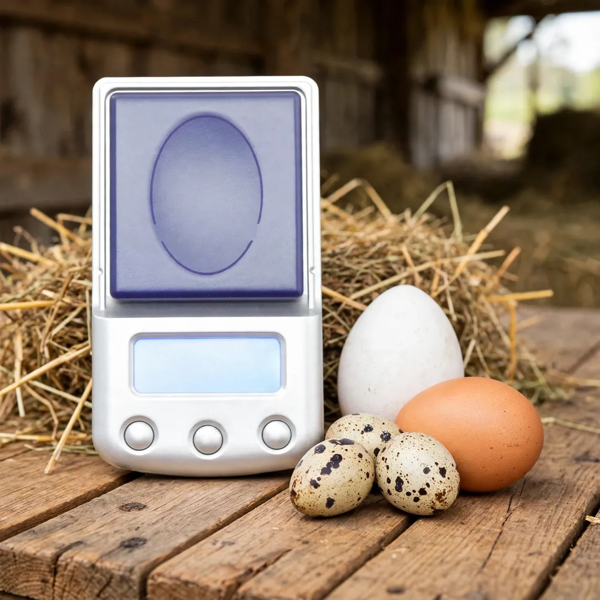
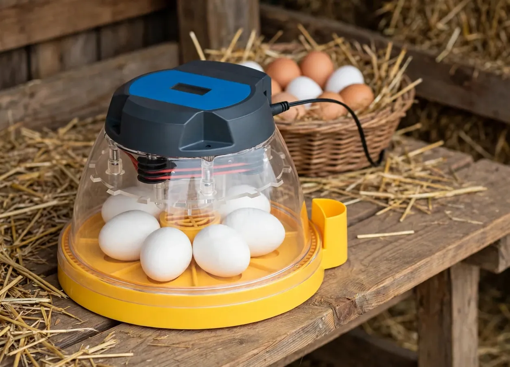
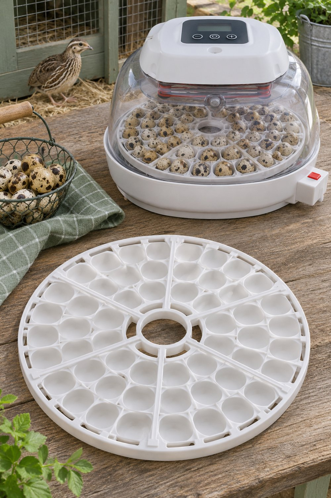
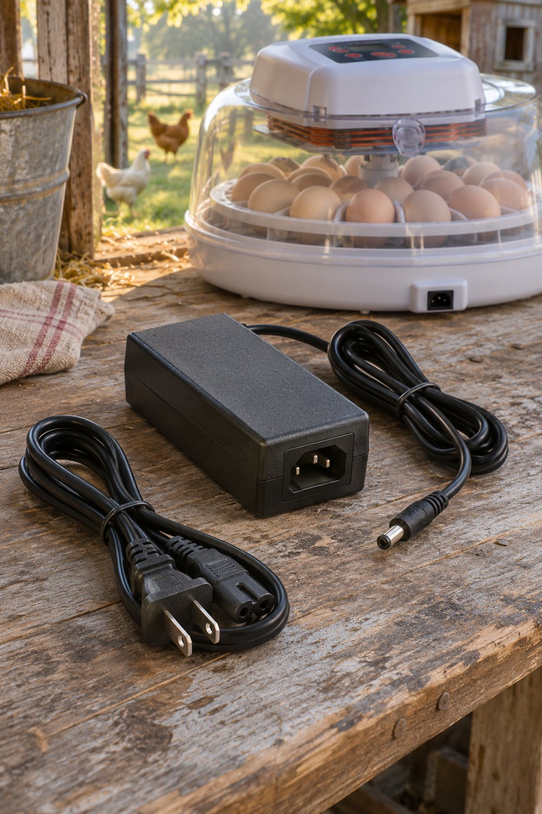
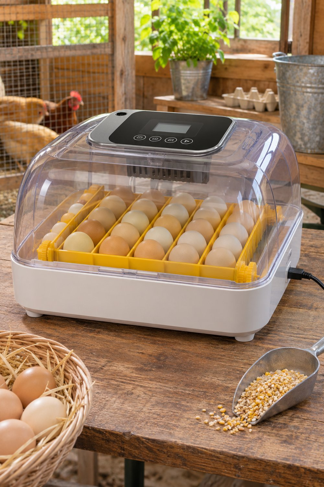
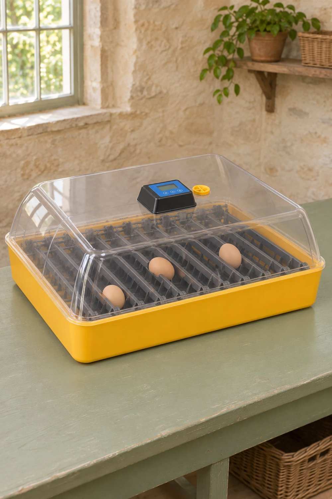

Incubadoras y ovoscopios

Báscula digital para huevos con pantalla retroiluminada
Puede encajar si has definido la especie, la tanda y la función que necesitas, antes de comparar equipos.
Inicio · Tienda · Incubadoras y ovoscopios
Tienda
19 productos. El precio se ve en Amazon.
Como afiliado de Amazon, Granja Rentable gana comisiones por compras que cumplan los requisitos. La compra se hace en Amazon, no en esta web.
Ningún producto de esta categoría coincide. Prueba una palabra más general o una marca.

Puede encajar si has definido la especie, la tanda y la función que necesitas, antes de comparar equipos.

Puede encajar si has definido la especie, la tanda y la función que necesitas, antes de comparar equipos.

Puede encajar si has definido la especie, la tanda y la función que necesitas, antes de comparar equipos.

Puede encajar si has definido la especie, la tanda y la función que necesitas, antes de comparar equipos.

Puede encajar si has definido la especie, la tanda y la función que necesitas, antes de comparar equipos.

Puede encajar si has definido la especie, la tanda y la función que necesitas, antes de comparar equipos.

Puede encajar si quieres adaptar una Nurture Right 360 a huevos más grandes. Compara el tamaño y peso de tus huevos y comprueba la capacidad de la variante anunciada, porque la bandeja grande actual del fabricante también se comercializa con otra distribución.

Útil si ya tienes esa incubadora y quieres pasar a codorniz. Comprueba el acople al volteador y su movimiento en vacío antes de cargarla.

Puede encajar si necesitas reponer el depósito externo de un gabinete compatible o quieres ver el nivel de agua desde fuera. Comprueba la referencia de la incubadora, las conexiones y el espacio para colocar el depósito.

Puede encajar si ya tienes la Nurture Right 360 y necesitas más altura bajo la tapa. Antes de comprar, comprueba que la bandeja sea compatible y que el peso y las dimensiones de los huevos permitan un volteo correcto.

Útil si ya comprobaste que la avería está en la fuente. Compara tensión, polaridad, conector y enchufe con la etiqueta de tu unidad antes de comprar.

Interesa si quieres consultar los huevos y rellenar agua en un equipo compacto. Comprueba la capacidad para tu especie y dónde quedará la botella exterior.

Puede encajar si incubas lotes pequeños y quieres observar la bandeja sin levantar la tapa. El volteo y la lectura de humedad ayudan en el seguimiento. Comprueba si el sistema AccuMist viene con el ASIN de la incubadora o se compra aparte.

Encaja en criaderos pequeños que incuban lotes medianos con regularidad. El volteo automático y el control de humedad reducen los ajustes manuales. El depósito externo de agua se aporta aparte. Confirma el voltaje de la versión anunciada y si necesitas bandejas específicas para la especie.

Encaja si trabajas con lotes de un tamaño regular. Antes de contar con sesenta plazas, comprueba la bandeja correspondiente al tamaño de huevo que recoges.

Encaja si ya tienes un recinto y quieres integrar esas tres funciones en un módulo. Antes de comprar, comprueba las dimensiones de montaje, la alimentación y qué trae el paquete.

Sirve si quieres incorporar circulación de aire a un equipo compatible. Comprueba el modelo en la etiqueta, sigue la guía de instalación y verifica la estabilidad del equipo en vacío antes de usarlo con huevos.

Encaja en una mesa de revisión con enchufe cercano. Comprueba el apoyo del huevo, el tipo de enchufe y la longitud de cable que necesitas.

Puede encajar si tu incubadora funciona y quieres automatizar el giro sin cambiarla entera. Comprueba la versión de la HovaBator, el espacio interior y el tamaño real de los huevos.